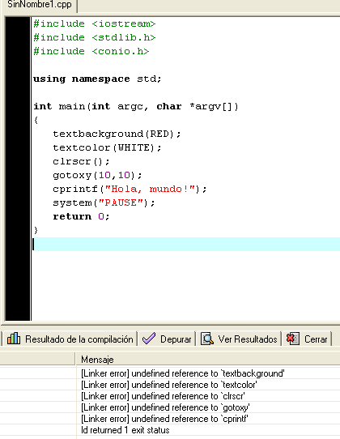
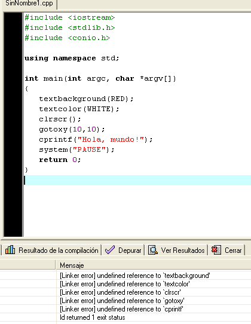

c++
Variables
Char:Es un tipo de datos integral,lo que significa qque el valor se acomula u almacena como un numero entero,diseñado para el almacenamiento de letras
string:Es una variable que almacena una secuencia de letras u otros valores un ejemplo es "que paso o que tienes",Al igual que los otros tipos de datos.
int:Almacena numeros enteros pero no con decimales puede ser el 1
flooat:Una variable tipo flooat es una variable que puede contener numeros decimales,no reales o reales como 5.002 y 77 o 0.33
bool:Almacena valores con dos estaados.
Char:Es un tipo de datos integral,lo que significa qque el valor se acomula u almacena como un numero entero,diseñado para el almacenamiento de letras
string:Es una variable que almacena una secuencia de letras u otros valores un ejemplo es "que paso o que tienes",Al igual que los otros tipos de datos.
int:Almacena numeros enteros pero no con decimales puede ser el 1
flooat:Una variable tipo flooat es una variable que puede contener numeros decimales,no reales o reales como 5.002 y 77 o 0.33
bool:Almacena valores con dos estaados.
Para que sirve?
R=La funcion de R es que el usuario pueda ubicar su cursor donde sea o lo desee, y este organiza con eje X y con eje Y (X=Horizontal Y=Vertical)
EJEMPLO:
int lola;
main()
{
gotoxy(30,3);
cout<<"HOLA";
cin>>lola;
}
 

En mi opinion yo manejaba masomenos los vectores pero cada vez
que los olvidaba siempre iba a mi correo institucional a ver
la clase para asi recordar el tema visto y creo que estos son importantes para la programacion es decir todo es
importante hasta un simple punto y coma o una comilla estaran dañando nuestro atgoritmo
por esto es importante prestar suma atencion al profesor y a lo que esta explicando porque o sino nos vamos a perder
A mi gusto no soy un gran estudiante en el area de tecnologia
pero siempre intento dar lo mejor de mi,intentando sacar una
buena nota pero hay dias que hay notas malas peero no nos
debemos dejar desmotivar por esto antes tenemos que investigar
para ser mejores cada dia como nos lo dice el professor ricardo.